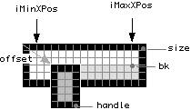

CHorizontalSlider
#include <vstcontrols.h>
class CHorizontalSlider : public CControl ;
Define a horizontal slider with a background and a handle. The range of variation of the handle should be defined. By default the handler is drawn with transparency (white color). By clicking Alt+Left Mouse the default value is used.
See also :
CHorizontalSlider |
1.0 |
CHorizontalSlider (CRect &size, CControlListener *listener, long tag, long iMinPos, long iMaxPos, CBitmap *handle, CBitmap *bk, CPoint &offset, int style);
Creates a horizontal slider object. Note that the min and max position is given in absolute value in the frame parent.
size |
The coordinates of the enclosing rectangle, relative to the parent frame. |
|---|---|
listener |
The object responsible for handling events in this control. for this control. |
tag |
The index of the control. |
iMinPos |
The minimum horizontal position of the handle in pixel. |
iMaxPos |
The maximum horizontal position of the handle in pixel. |
handle |
The handle's pixmap. |
bk |
The background's pixmap. |
offset |
The offset is the top-left point of the displayed area of the background. |
style |
The style allows to define where the zero position is defined ( kLeft
or kRight (the default value)). |

Example :
myBackground
= new CBitmap (kBackgroundBitmap);
myHandle
= new CBitmap (kHandleBitmap);
CRect size (
kSlider_left,
kSlider_top,
kSlider_left + myBackground->getWidth(),
kSlider_top + myBackground->getHeight()
);
CPoint offset(0, 0);
int minPos = kSlider_left;
int maxPos = kSlider_left + myBackground->getWidth()
- myHandle->getWidth () - 1;
myHorizontalSlider = new CHorizontalSlider (
size,
this,
kMyParameter,
minPos,
maxPos,
myHandle,
myBackground,
offset
);
frame->addView (myHorizontalSlider);
CHorizontalSlider |
1.0 |
CHorizontalSlider (CRect&size, CControlListener *listener, long tag, CPoint &offsetHandle, long rangeHandle, CBitmap *handle, CBitmap *bk, CPoint &offset, long style);
Creates a horizontal slider object.
size |
The coordinates of the enclosing rectangle, relative to the parent frame. |
|---|---|
listener |
The object responsible for handling events in this control. for this control. |
tag |
The index of the control. |
offsetHandle |
The offset of the handle. |
rangeHandle |
The size of the handle range. |
handle |
The pixmap of the slider |
bk |
The pixmap of the background. |
offset |
The top-left point of the displayed area of the background, relative to the control. |
style |
The style allows to define where the zero position is defined (kLeft
or kRight (the default value)). |
Copyright ©2003
Steinberg Media Technologies GmbH.
Last Modified: